Aktuálna ponuka
Nehnuteľnosti, ktoré ponúkam
12 nehnuteľností na predaj a prenájom. Vyberte typ, alebo napíšte lokalitu.
12 z 12 ponúk
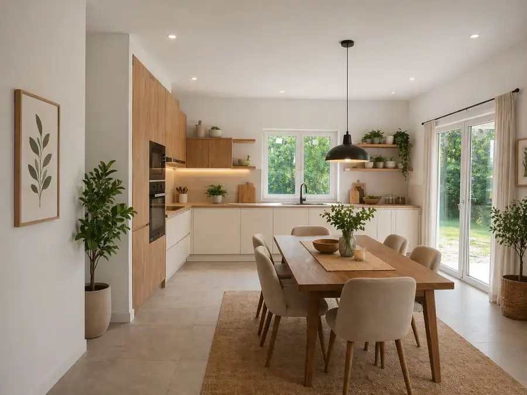
Rodinné domy9 245 000 €Na predaj moderný 4-izbový rodinný dom-Dunajská Streda-Florida park Dunajská Streda 4-izbový107 m² Na predaj moderný 4-izbový rodinný dom – Dunajská Streda, Florida Park Ponúkame na predaj prízemný 4-izbový rodinný dom v dvojdome, nachádzajúci sa v… Nebytové priestory10
2 000 €Exkluzívny obchodný priestor na prenájom v centre Dunajskej Stredy – u
Dunajská Streda
258 m²
Exkluzívny obchodný priestor na prenájom v centre Dunajskej Stredy – ul. Vámbéryho Ponúkame na prenájom reprezentatívny obchodný priestor o výmere…
Nebytové priestory10
2 000 €Exkluzívny obchodný priestor na prenájom v centre Dunajskej Stredy – u
Dunajská Streda
258 m²
Exkluzívny obchodný priestor na prenájom v centre Dunajskej Stredy – ul. Vámbéryho Ponúkame na prenájom reprezentatívny obchodný priestor o výmere…
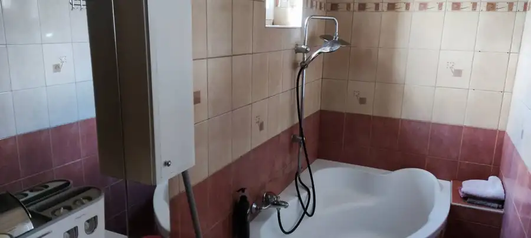
Rodinné domy10 249 000 €Kompletne zrekonštruovaný rodinný dom s wellness, bazénom a krásnou zá Dolný Štál 4-izbový120 m² Ponúkame na predaj kompletne prerobený rodinný dom (elektrika, voda, kúrenie) v tichej a príjemnej ulici obce Dolný Štál, s výbornými susedmi a…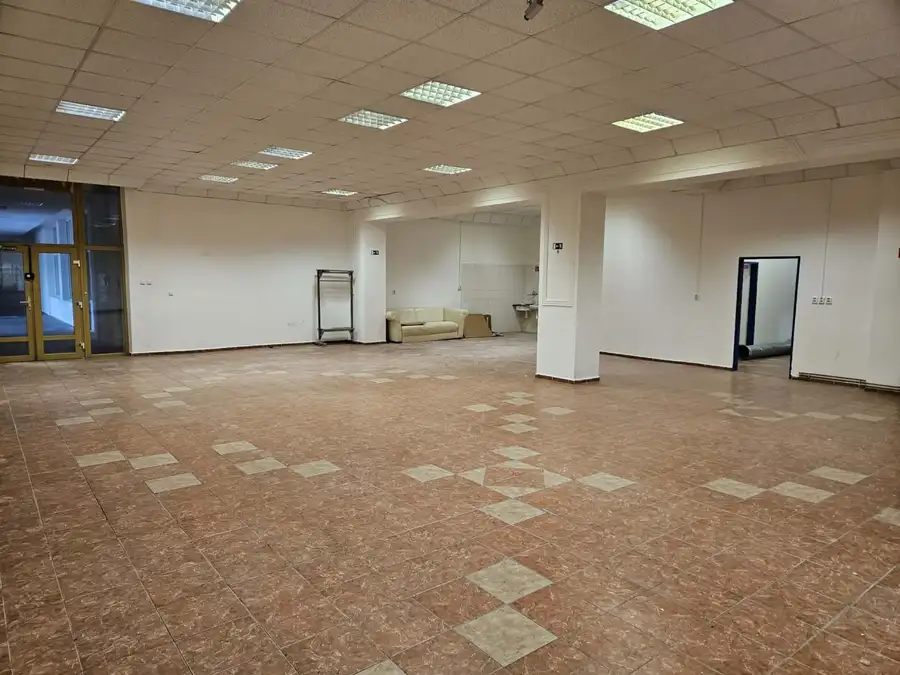
Nebytové priestory10 400 000 €Exkluzívny obchodný priestor na predaj v centre Dunajskej Stredy – ul. Dunajská Streda 258 m² Exkluzívny obchodný priestor na predaj v centre Dunajskej Stredy – ul. Vámbéryho Ponúkame na predaj reprezentatívny obchodný priestor o výmere 258…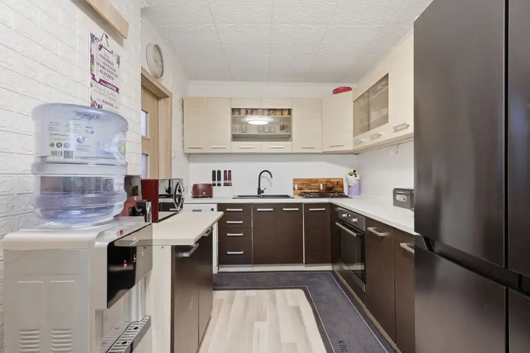
Byt10 157 000 €Exkluzívne-4 izbový byt na PREDAJ v Dunajskej Strede Dunajská Streda 4-izbový76 m² Ponúkame na predaj priestranný 4-izbový byt po čiastočnej rekonštrukcii v najvyhľadávanejšej lokalite mesta Dunajská Streda – Ružový háj. Táto…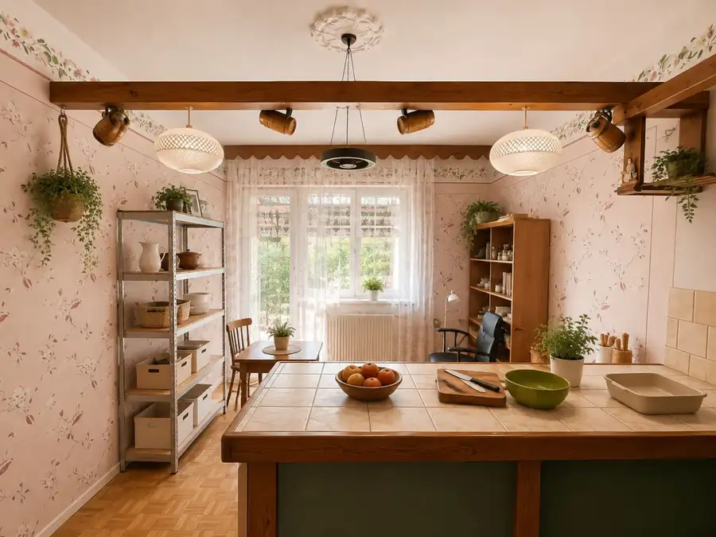
Rodinné domy9 220 000 €Priestranný rodinný dom s veľkým pozemkom na PREDAJ- Veľké Blahovo Veľké Blahovo 4-izbový150 m² Hľadáte priestranný rodinný dom s veľkým pozemkom, záhradou a množstvom možností, ktorý ponúka dostatok priestoru pre celú rodinu? Táto nehnuteľnosť…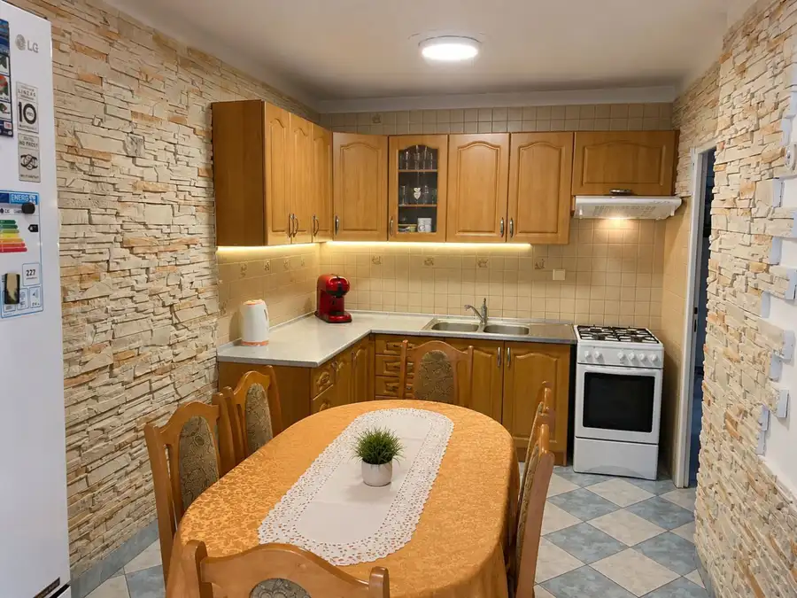
Byt10 155 000 €Exkluzívne na PREDAJ, zrekonštruovaný 3 izb.byt, Ružový háj, Dunajská Dunajská Streda 3-izbový72 m² Hľadáte priestranný byt vo výbornej lokalite, kde sa môžete ihneď nasťahovať bez ďalších investícií? Máme pre vás výnimočnú ponuku. Ponúkame…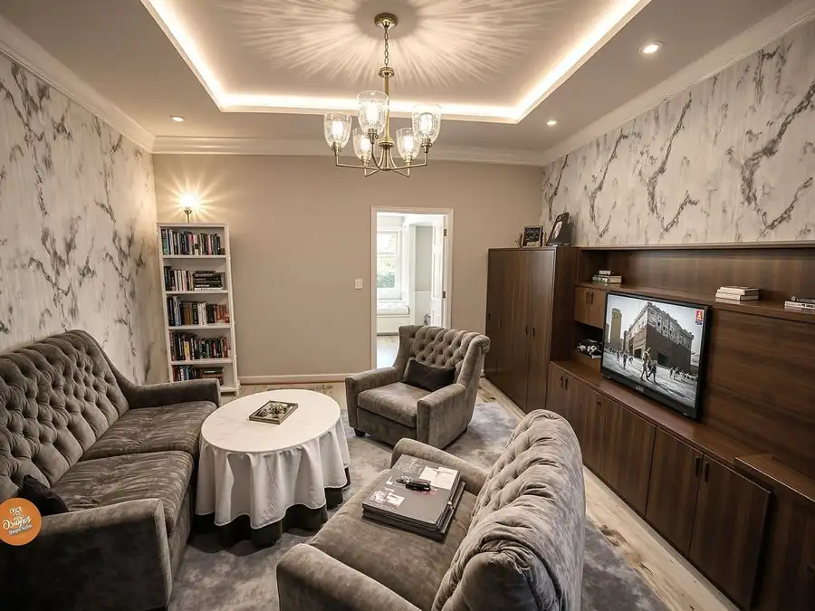
Rodinné domy10 152 990 €Znížená cena za rodinný dom vo Vrakúni, blízko Dunajskej Stredy Vrakúň 4-izbový120 m² Ponúkame na predaj priestranný rodinný dom v tichej ulici v obci Vrakúň, len pár minút od Dunajskej Stredy. Dom sa nachádza na pozemku s výmerou 800…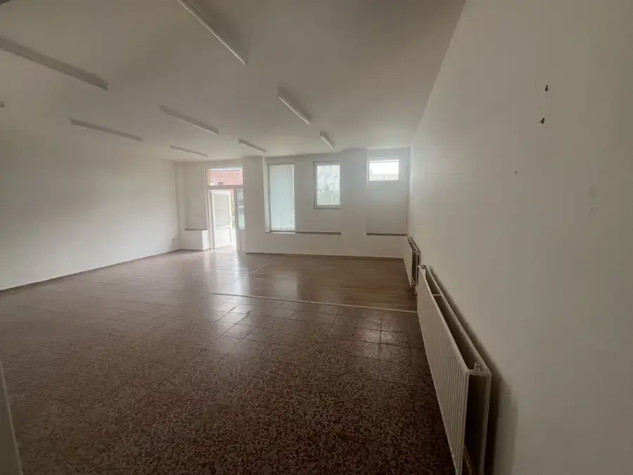
Nebytové priestory10 Cena dohodouNa prenájom obchodný priestor/sklad v obci Povoda Povoda 120 m² Ponúkame na prenájom obchodný priestor alebo sklad s celkovou výmerou 120 m² v obci Povoda. Priestor je vhodný na skladovanie, obchodné účely, menšiu…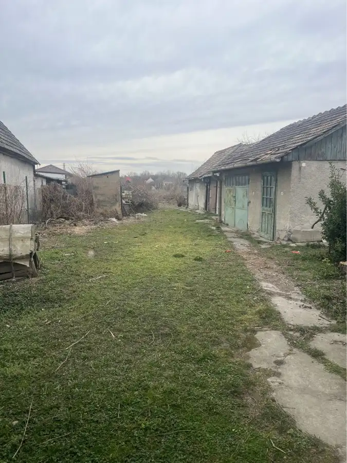
Rodinné domy10 139 500 €Na predaj stavebný pozemok so starším rodinným domom v Gabčíkove, tic Gabčíkovo 100 m² Ponúkame na predaj 3-izbový rodinný dom v pôvodnom stave, nachádzajúci sa v tichej časti mesta Gabčíkovo. Dom je situovaný na priestrannom, rovinatom…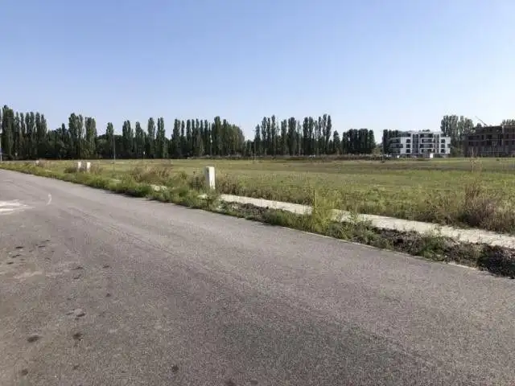
Pozemok 108 826 €Exkluzívny stavebný pozemok 576 m² – Dunajská Streda, Florida Park Dunajská Streda 579 m² Exkluzívny stavebný pozemok 576 m² – Dunajská Streda, Florida Park Ponúkame na predaj atraktívny stavebný pozemok o výmere 576 m² v prestížnej a…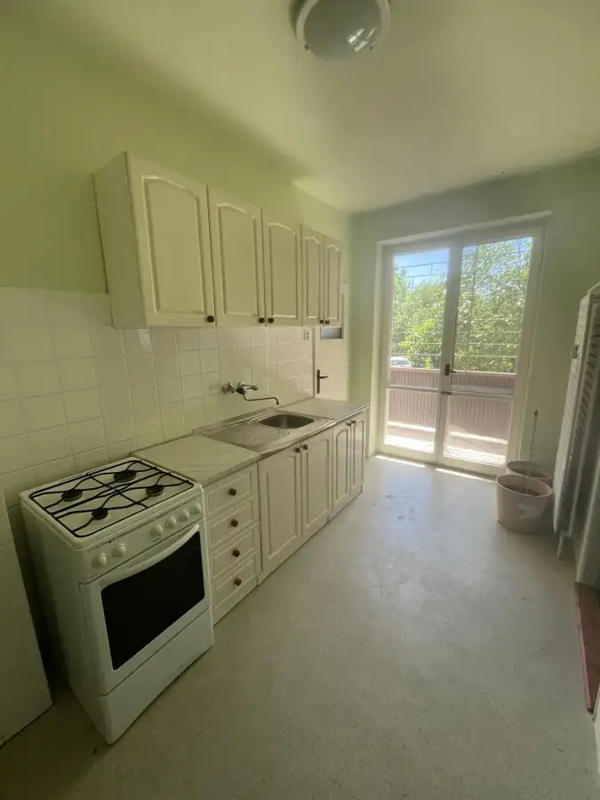
Byt10 123 000 €Nová ponuka – 3 izbový byt na predaj v Dunajskej Strede Dunajská Streda 3-izbový8 m² Ponúkame na predaj priestranný 3 izbový byt s výmerou 80 m² + loggia, nachádzajúci sa v uzavretom areáli na Veľkoblahovskej ceste v Dunajskej Strede.…Tomuto výberu zatiaľ nezodpovedá žiadna ponuka. Napíšte mi, čo hľadáte.